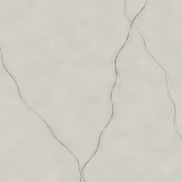
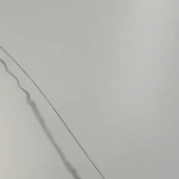
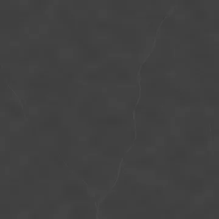
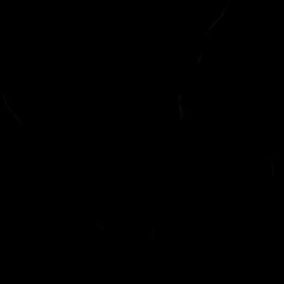

Base color
sRGB · RGB8
4096 × 4096 · 2.39 MiB
SHA-256
c372097f9761a3df0e8d9bfa5b2fe0156f9d32bc86cd3d712fbd1f9c86bd179fRebuilt suite / 01
One procedural 2.8 m slab with narrow shear seams, branching fractures and mineral intergrowth; honed intact finish.
The specimen and matched surface proof are different presentations. Native texture resolution does not determine render resolution.


Specimen: Blender 4.5.3 LTS · CPU · 768 maximum / 128 minimum samples · adaptive threshold 0.005 · denoising: false · AgX.
Specimen manifest · Matched-proof manifest · Editable specimen scenes · Renderer source · Review and remaining limits
Specimen SHA-256 e671ce4120e3c84d7f71152a393c2af8a8ccaac5ea2c661b0116e80e3c5e88c6
Proof SHA-256 aa5da119e5a0f2b50383db86f85dcd2fb9d26eaa9fa1fbcb0488b67bb0586396
Base color uses sRGB; data maps use linear / Non-Color. Displacement in meters = (height − 0.5) × 0.00012. Pair macro height with residual normal for geometric displacement, or use the full normal without macro displacement.
Previews below are reduced display copies. Each link opens the unchanged native 4096 × 4096 map.

sRGB · RGB8
4096 × 4096 · 2.39 MiB
c372097f9761a3df0e8d9bfa5b2fe0156f9d32bc86cd3d712fbd1f9c86bd179f
Linear · Gray8
4096 × 4096 · 0.36 MiB
ba02caa48df3f20bcc8a0d2304877007c6fd538231a398057e5e829eb6fadb23
Linear · Gray8
4096 × 4096 · 0.02 MiB
334c4a79f661f8f9c215b7fd06284d5fb3fe7fd3822f10dc8842f85f664c9a7fTangent space · RGB8
4096 × 4096 · 1.87 MiB
886cc384a3868e4db022ce36250ae4bb122de03b711741bb22310ce3da752b85
Tangent space · RGB8
4096 × 4096 · 1.87 MiB
fcdcbbfc2848f0f43024e6b3d3aef8c220588ee26e3a537447e4401c67641494Linear · Gray16
4096 × 4096 · 8.50 MiB
7a174fe60890224c7102254a8e812e69da630affa568c169a9a39c34df211417Linear · Gray16
4096 × 4096 · 7.49 MiB
7d18e496528a639b3f4bfca7fe2731150be45462c076c86dcaa7ddbe4710c5b5
Tangent space · RGB8
4096 × 4096 · 2.15 MiB
7b3bb6b883df6bf648b4ea43739ac8d1419aeb56b281b8615262de4d8d709fda
Linear · Gray8
4096 × 4096 · 0.02 MiB
eb472d6bf383e4da4fb64a8cedee8fb37709545cad9a1058396c5b77ba2c577eLinear · R: AO / G: roughness / B: metallic
4096 × 4096 · 0.46 MiB
277f550b76cc1b1b0d62be17806be3bd92e1f25db0bb5f34538099d07f930363
Linear · Gray8
4096 × 4096 · 0.06 MiB
900949fc93a6e4f605a6f90300812d576019079598bf70fa3790035cd9d15ac4
Linear · Gray8
4096 × 4096 · 0.02 MiB
eb472d6bf383e4da4fb64a8cedee8fb37709545cad9a1058396c5b77ba2c577eProcedural anatomy and finish models use artistic physical estimates. These are not measured scans or calibrated reflectance data.
Physical material metadata · Original appearance comparison · Preserved baseline evidence